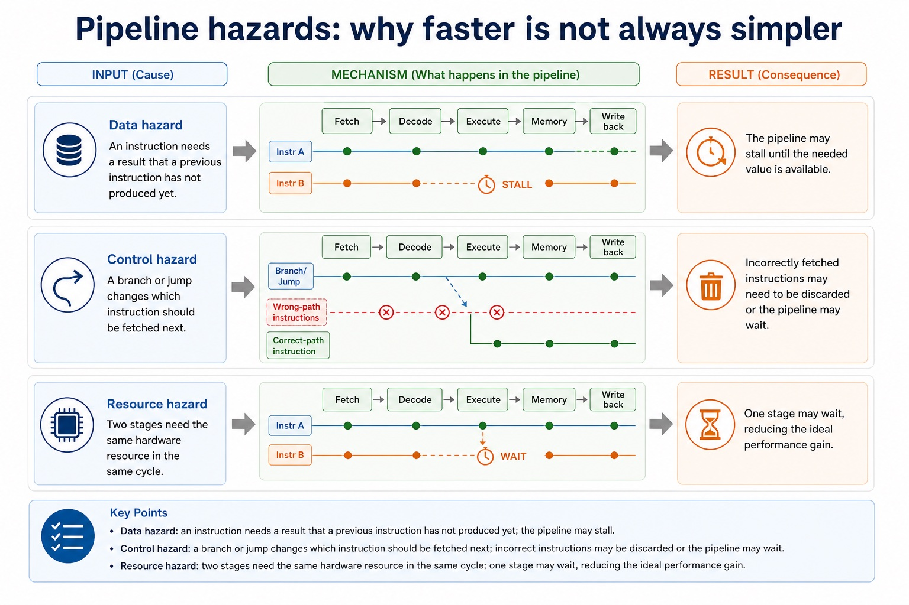
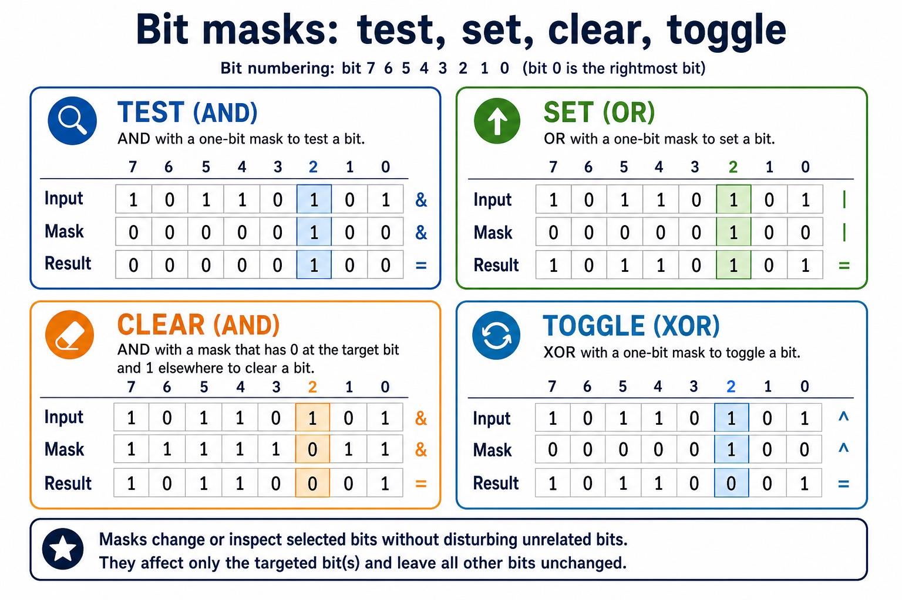

Cambridge AS9618 | Paper 1 | Section 4: Processor fundamentals
Bit manipulation, masks and binary shifts
Flexible-depth lesson
S4.15 | Learn from the diagrams, test the method, then choose the practice you need.
Choose a Quick, Full or Deep route
Quick route
Use the diagnostic, learning objectives, first worked example and foundation question. Stop once the learner can explain the central distinction accurately.
Full route
Use every knowledge-point material set, the worked method, the terminology check and all questions.
Deep route
Add the prerequisite refresher, ask learners to connect the concept checklist, discuss the labelled extension and complete a transfer question without a model answer.
Part 1 | optional depth
Prerequisite knowledge and quick diagnostic
Recall S1.02 before starting this lesson.
Give one accurate definition or method step before continuing. If it is missing, revisit only that prerequisite.
Open optional prerequisite refresher
The Version 2 row requires binary, denary, hexadecimal, Binary Coded Decimal (BCD), one's complement and two's complement; BCD and complements are representations rather than additional number bases.
Show understanding of binary, denary and hexadecimal number systems, BCD, and one's- and two's-complement representations.
Part 2 | knowledge-point material sets
Learn each point through visuals
Follow the map, the three-part explanation and the concrete cue. Open precise wording only after the idea is clear.
Open the concept checklist and choose what to teach
AND mask / bitwise AND
OR mask / bitwise OR
XOR mask / bitwise XOR
LSL / logical left shift
LSR / logical right shift
logical
arithmetic
cyclic
left shift
right shift
test
set
clear
toggle
monitor
control
01
S4.15 · comparison
AND mask · OR mask · XOR mask · LSL
Concept map
AND maskOR maskXOR maskLSLLSRlogicalarithmeticcyclicleft shiftright shifttestsetcleartogglemonitorcontrol
See how it works
ContrastUse AND, OR and XOR masks to test, set, clear and toggle bits, and apply logical, arithmetic and cyclic left/right shifts at a stated fixed width
EvidenceInclude device monitoring/control and distinguish discarded, sign-filled and rotated bits
Decisiona logical shift inserts zero, an arithmetic right shift preserves the sign bit, and a cyclic shift wraps the bit that leaves one end back to…
S4.15 diagrams
1 / 6
01
Diagram · 1 of 6
Monitor and control a device register
Open text transcript
AND a status byte with a one-bit mask to test a named device flag.
OR a control byte with a one-bit mask to set the selected output flag.
AND with an inverted mask clears a flag; XOR with a one-bit mask toggles it.
02
Concrete example · 2 of 6
Binary shifts: logical, arithmetic, cyclic
Open text transcript
Every shown input and stored result contains exactly eight bits.
Logical shifts insert zero; logical left 10110011 becomes 01100110 and logical right becomes 01011001.
Arithmetic left 10110011 becomes 01100110; arithmetic right copies sign bit 1 and becomes 11011001.
Cyclic left rotates the outgoing bit to give 01100111; cyclic right gives 11011001.
Unsigned logical-left overflow and signed arithmetic-left overflow both occur here; rotations do not use an overflow label.
03
Comparison · 3 of 6
Instruction groups: data movement, I/O, arithmetic, control and compare
Open text transcript
The five groups are data movement, input/output, arithmetic, unconditional/conditional instructions and compare.
Data movement uses LDM, LDD, LDI, LDX, LDR, MOV and STO; LDR n loads the immediate value n into IX.
Input/output uses IN and OUT; arithmetic uses ADD, SUB, INC and DEC.
JMP is unconditional; CMP and CMI compare; JPE jumps after True and JPN jumps after False.
END returns control to the operating system.
04
Process · 4 of 6
Decode and execute are not filler words
Open text transcript
The control unit interprets the instruction in the CIR. It identifies the opcode, decides what operation is required, and identifies any operands or addresses needed.
Execute: arithmetic or logic
If the instruction is arithmetic or logical, the ALU performs the operation and a result may be stored in a register.
Execute: memory access
If the instruction needs data from memory, the CPU uses buses and registers to read from or write to the required memory address.
Execute: branch
If the instruction is a branch/jump, the PC may be changed to a different address rather than just continuing with the next instruction.
Common error
05
Analogy / use · 5 of 6
Why a CPU divides specialised work
Open text transcript
The control unit interprets the current instruction.
The ALU performs the required arithmetic or logical operation.
Registers and buses hold and move the immediate values.
06
Process · 6 of 6
Pipelining overlaps instruction-cycle stages
Open text transcript
Pipeline
A processor technique where multiple instructions are at different stages of execution at the same time.
The next instruction is fetched from memory using the program counter and memory registers.
The control unit interprets the instruction and prepares required operands/control signals.
The instruction is carried out, such as arithmetic, memory access or a branch.
Open precise syllabus wording
Use AND, OR, XOR, LSL and LSR for bit manipulation, including testing/setting bits with masks.
Use AND, OR and XOR masks to test, set, clear and toggle bits, and apply logical, arithmetic and cyclic left/right shifts at a stated fixed width. Include device monitoring/control and distinguish discarded, sign-filled and rotated bits.
Supporting diagram library
1 / 11
01
Diagram · 1 of 11
Cache: reduce slow memory access
Open text transcript
1. CPU requests data The CPU needs an instruction or data item.
2. Cache checked first Cache is much faster than main memory.
3. Cache hit If found, access is fast and the CPU waits less.
4. Cache miss If not found, data is fetched from slower main memory and may be copied into cache.
Common error
Cache is not the same as RAM capacity. It is smaller, faster and used to reduce repeated slow access to main memory.
02
Diagram · 2 of 11
Clock speed: more cycles per second
Open text transcript
Mechanism
A higher clock speed means more fetch-decode-execute cycle steps can be started per second, if other parts keep up.
3.6 GHz means 3.6 billion clock cycles per second, not automatically 3.6 billion completed programs.
Limitation
Memory access, heat, power use and CPU architecture can limit the real improvement.
03
Diagram · 3 of 11
The official processor performance factors
Open text transcript
The official performance factors are processor type and number of cores, bus width, clock speed and cache memory.
Processor type affects how much useful work can be completed for a workload, while more cores help only when work can run in parallel.
A wider bus transfers more bits per transfer; a higher clock speed provides more cycles per second; cache reduces slower main-memory accesses when required data or instructions are present.
No single factor guarantees that one computer will be faster for every program.
04
Diagram · 4 of 11
Cores: more independent processing units
Open text transcript
One thread can execute on only one core at a time.
A single-threaded task cannot run its own instructions concurrently across several cores.
Other cores may still execute operating-system work or other processes; they are not necessarily idle.
05
Diagram · 5 of 11
Performance is limited by bottlenecks
Open text transcript
Memory bottleneck A fast CPU still waits if data arrives slowly from memory.
Software bottleneck Single-threaded code cannot fully use many cores.
Heat and power Higher clock speed can require more power and produce more heat.
Architecture Different CPU designs may do different amounts of work per clock cycle.
06
Diagram · 6 of 11
Word length: bits processed as a unit
Open text transcript
Explanation
Exam-safe wording
Larger values
More bits can represent larger numbers in one word.
A longer word can process larger data values in a single operation.
More precision
More bits can support greater numeric precision where relevant.
Useful for calculations needing larger or more precise operands.
07
Diagram · 7 of 11
Without and with pipelining
Open text transcript
Without pipelining, each instruction completes fetch, decode and execute before the next starts.
In an ideal three-stage pipeline, instruction 1 completes in cycle 3, instruction 2 in cycle 4 and instruction 3 in cycle 5.
Instruction 3 must execute in cycle 5; it is not complete after decode in cycle 4.
08
Diagram · 8 of 11
Pipeline hazards: why faster is not always simpler

Open text transcript
Consequence
Data hazard
An instruction needs a result that a previous instruction has not produced yet.
The pipeline may stall until the needed value is available.
Control hazard
A branch or jump changes which instruction should be fetched next.
Incorrectly fetched instructions may need to be discarded or the pipeline may wait.
Resource hazard
09
Diagram · 9 of 11
Bit masks target selected positions

Open text transcript
AND with a 1 preserves or tests a bit, while AND with a 0 clears it.
OR with a 1 sets a bit without clearing unrelated positions.
XOR with a 1 toggles a bit while XOR with a 0 preserves it.
10
Diagram · 10 of 11
Stalls and flushes reduce the ideal gain
Open text transcript
The pipeline pauses one or more stages because an instruction cannot safely continue yet.
Incorrect or unwanted instructions are removed from the pipeline, often after a branch decision.
Dependency
One instruction depends on the result or effect of an earlier instruction.
Ideal case
Pipeline is full, stages are balanced, no hazards occur and instructions complete regularly.
11
Diagram · 11 of 11
Throughput improves, but latency still exists
Open text transcript
A three-stage pipeline processes each instruction through fetch, decode and execute exactly once.
For four instructions, cycles 1 and 2 fill the pipeline.
In cycles 3 and 4, different instructions occupy fetch, decode and execute concurrently.
Pipelining improves throughput after fill but does not remove the latency of one instruction.
Apply the idea
Worked method
01Test, set, clear and toggle one flag
02For Status = 10110100, an AND mask tests a selected bit, an OR mask sets it, an AND mask with a zero at that position clears it, and an XOR mask toggles…
03LSL moves bits left; LSR moves them right and fills with zero.
Open precise terminology and exam facts
Use AND, OR and XOR masks to test, set, clear and toggle bits, and apply logical, arithmetic and cyclic left/right shifts at a stated fixed width. Include device monitoring/control and distinguish discarded, sign-filled and rotated bits.
A bitwise AND mask can test or clear selected bits; an OR mask can set selected bits; an XOR mask can toggle selected bits. These operations are used to monitor and control individual flags without changing unrelated bits.
LSL is a logical left shift and LSR is a logical right shift. Distinguish logical shifts from arithmetic shifts and cyclic shifts: a logical shift inserts zero, an arithmetic right shift preserves the sign bit, and a cyclic shift wraps the bit that leaves one end back to the other.
For bit manipulation, masks and binary shifts, identify the required concept before describing its mechanism or consequence.
Beyond syllabus / 延伸知识（不要求背诵）
modern processors add pipelining and several cache levels, but exam answers should begin with the syllabus processor model.
Part 3 | select by learner need
Practice by question type
explainexplainfoundation6 marks
Question 1. Explain how AND, OR and XOR masks test, clear, set and toggle control flags, then apply one LSL and one LSR.
Show answer and marking guidance
Answer: AND test/clear; OR set; XOR toggle; correct LSL; correct LSR; monitor/control context
Marking guidance: Do not treat logical, arithmetic and cyclic shifts as identical.
Common error: For the command word explain, perform that exact action; do not replace it with an unrelated fact.
applyrecallapplication2 marks
Question 2. Which mask operation sets selected bits?
Show answer and marking guidance
Answer: Bitwise OR.
Marking guidance: Award one mark for each distinct, technically accurate point or method step.
Common error: Do not repeat the same point in different words; each mark needs a separate idea or method step.
applyrecalltransfer2 marks
Question 3. What is inserted by a logical shift?
Show answer and marking guidance
Answer: Zero bits.
Marking guidance: Award one mark for each distinct, technically accurate point or method step.
Common error: Do not copy the worked example unchanged; transfer the method and check it against the new context.
Related past-paper indexes
Reference
Marks
Command word
Question type
9618/13/W/25 Q6(a)
4
compare
evaluate
9618/11/W/25 Q4(a)
1
apply
recall
9618/11/W/25 Q4(b)
1
apply
recall
9618/11/W/25 Q4(c)
1
apply
recall
Index only: Cambridge question and mark-scheme wording is not reproduced on this public course page.
Part 4 | close when ready
Summary and exam reminders
Summary
Define bit manipulation, masks and binary shifts with the exact technical vocabulary expected by the syllabus.
Use the lesson method on a fresh context and show the intermediate decision, representation or calculation.
Match the shape of the answer to the command word and the available marks.
Check the final answer against the scenario instead of repeating a memorised sentence.
Common error to correct
Students often memorise register names without roles. Correction: a register earns its name by what it temporarily holds.
Exam technique
Follow the command word: state gives a fact; explain links a cause to a consequence; compare covers both sides.
Match the number of independent points or method steps to the available marks.
For bit manipulation, masks and binary shifts, use the exact technical term before applying it to the scenario.